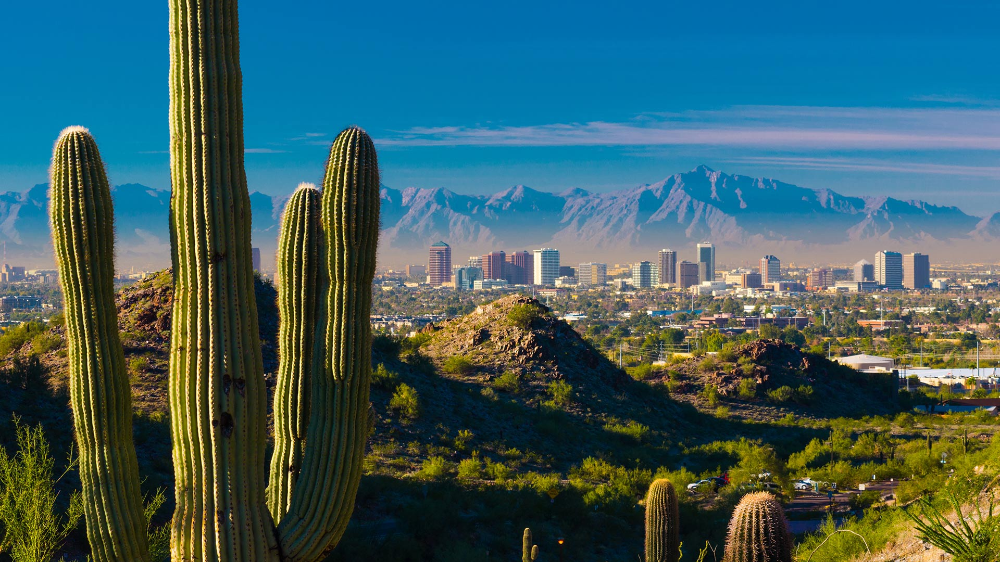

The Valley of the Sun has a special part in my heart every since I was a little kid. It has turned into my second home. I love the western feel you get when in this city. It is a mix of old western and modern city. The catcus and palm trees are always a welcome site from cold and snowy Montana when you go in the winter or spring. The weather is great for all but four months of the year. I love the mountains and desert it is very peaceful. During the spring my favorite things to do are spring training games and golf. There is thousands of great golf courses across the valley. There is also a lot of great hiking spots in the area. I recommend if you are able hiking camel-back mountain or to hike hole-in-the-rock to get great views of the city. Their are also great restaurants around like Chompies and Cooperstown. They also have a lot great Mexican food around to, there are a lot of great taco trucks lining the streets.
